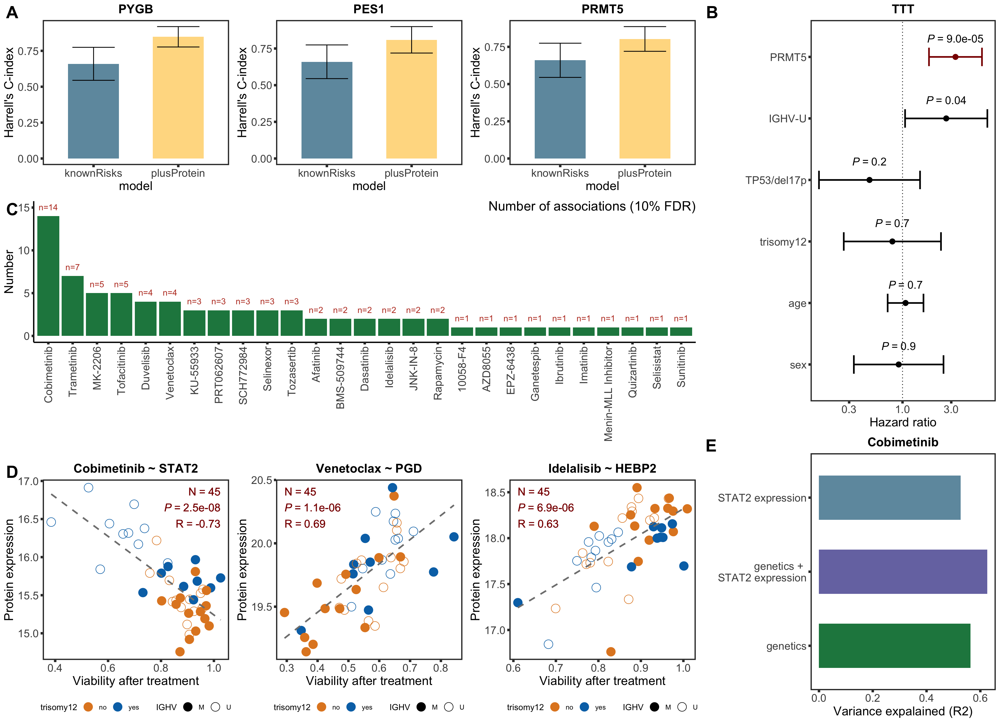
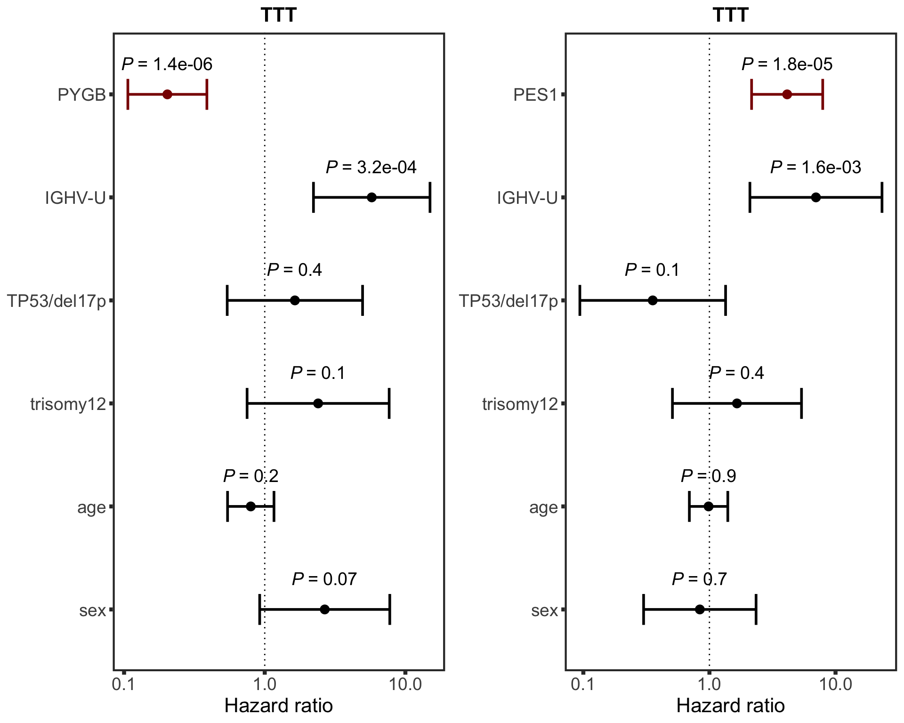

Main text figure
leftCol <- plot_grid(cTTT, drugBar, drugCor, ncol =1, rel_heights = c(0.3,0.4,0.4), labels = c("A","C","D"), label_size =22)
rightCol <- plot_grid(hr.prmt5, stat2Bar, ncol =1, rel_heights = c(0.6,0.4), align = "v", labels = c("B","E"),label_size =22)
plot_grid(leftCol, rightCol, ncol=2, rel_widths = c(0.7,0.3))
Supplementary
plot_grid(hr.pygb, hr.pes1, ncol=2)
sessionInfo()R version 4.0.2 (2020-06-22)
Platform: x86_64-apple-darwin17.0 (64-bit)
Running under: macOS 10.16
Matrix products: default
BLAS: /Library/Frameworks/R.framework/Versions/4.0/Resources/lib/libRblas.dylib
LAPACK: /Library/Frameworks/R.framework/Versions/4.0/Resources/lib/libRlapack.dylib
locale:
[1] en_US.UTF-8/en_US.UTF-8/en_US.UTF-8/C/en_US.UTF-8/en_US.UTF-8
attached base packages:
[1] parallel stats4 stats graphics grDevices utils datasets
[8] methods base
other attached packages:
[1] latex2exp_0.4.0 forcats_0.5.1
[3] stringr_1.4.0 dplyr_1.0.5
[5] purrr_0.3.4 readr_1.4.0
[7] tidyr_1.1.3 tibble_3.1.0
[9] tidyverse_1.3.0 cowplot_1.1.1
[11] SummarizedExperiment_1.18.2 DelayedArray_0.14.1
[13] matrixStats_0.58.0 Biobase_2.48.0
[15] GenomicRanges_1.40.0 GenomeInfoDb_1.24.2
[17] IRanges_2.22.2 S4Vectors_0.26.1
[19] BiocGenerics_0.34.0 glmnet_4.1-1
[21] Matrix_1.3-2 maxstat_0.7-25
[23] survminer_0.4.9 ggpubr_0.4.0
[25] ggplot2_3.3.3 survival_3.2-7
[27] jyluMisc_0.1.5 pheatmap_1.0.12
[29] limma_3.44.3
loaded via a namespace (and not attached):
[1] readxl_1.3.1 backports_1.2.1 fastmatch_1.1-0
[4] drc_3.0-1 workflowr_1.6.2 igraph_1.2.6
[7] shinydashboard_0.7.1 splines_4.0.2 crosstalk_1.1.1
[10] BiocParallel_1.22.0 TH.data_1.0-10 digest_0.6.27
[13] foreach_1.5.1 htmltools_0.5.1.1 fansi_0.4.2
[16] memoise_2.0.0 magrittr_2.0.1 cluster_2.1.1
[19] openxlsx_4.2.3 annotate_1.66.0 modelr_0.1.8
[22] sandwich_3.0-0 piano_2.4.0 colorspace_2.0-0
[25] blob_1.2.1 rvest_1.0.0 haven_2.3.1
[28] xfun_0.21 crayon_1.4.1 RCurl_1.98-1.2
[31] jsonlite_1.7.2 genefilter_1.70.0 zoo_1.8-9
[34] iterators_1.0.13 glue_1.4.2 gtable_0.3.0
[37] zlibbioc_1.34.0 XVector_0.28.0 car_3.0-10
[40] shape_1.4.5 abind_1.4-5 scales_1.1.1
[43] mvtnorm_1.1-1 DBI_1.1.1 relations_0.6-9
[46] rstatix_0.7.0 Rcpp_1.0.6 plotrix_3.8-1
[49] xtable_1.8-4 bit_4.0.4 foreign_0.8-81
[52] km.ci_0.5-2 DT_0.17 htmlwidgets_1.5.3
[55] httr_1.4.2 fgsea_1.14.0 gplots_3.1.1
[58] RColorBrewer_1.1-2 ellipsis_0.3.1 farver_2.1.0
[61] XML_3.99-0.5 pkgconfig_2.0.3 sass_0.3.1
[64] dbplyr_2.1.0 utf8_1.1.4 labeling_0.4.2
[67] AnnotationDbi_1.50.3 tidyselect_1.1.0 rlang_0.4.10
[70] later_1.1.0.1 cachem_1.0.4 munsell_0.5.0
[73] cellranger_1.1.0 tools_4.0.2 visNetwork_2.0.9
[76] cli_2.3.1 RSQLite_2.2.3 generics_0.1.0
[79] broom_0.7.5 evaluate_0.14 fastmap_1.1.0
[82] yaml_2.2.1 bit64_4.0.5 knitr_1.31
[85] fs_1.5.0 zip_2.1.1 survMisc_0.5.5
[88] caTools_1.18.1 nlme_3.1-152 mime_0.10
[91] slam_0.1-48 xml2_1.3.2 rstudioapi_0.13
[94] compiler_4.0.2 curl_4.3 ggsignif_0.6.1
[97] marray_1.66.0 reprex_1.0.0 bslib_0.2.4
[100] stringi_1.5.3 highr_0.8 lattice_0.20-41
[103] shinyjs_2.0.0 KMsurv_0.1-5 vctrs_0.3.6
[106] pillar_1.5.1 lifecycle_1.0.0 jquerylib_0.1.3
[109] data.table_1.14.0 bitops_1.0-6 httpuv_1.5.5
[112] R6_2.5.0 promises_1.2.0.1 KernSmooth_2.23-18
[115] gridExtra_2.3 rio_0.5.26 codetools_0.2-18
[118] MASS_7.3-53.1 gtools_3.8.2 exactRankTests_0.8-31
[121] assertthat_0.2.1 rprojroot_2.0.2 withr_2.4.1
[124] multcomp_1.4-16 GenomeInfoDbData_1.2.3 mgcv_1.8-34
[127] hms_1.0.0 grid_4.0.2 rmarkdown_2.7
[130] carData_3.0-4 git2r_0.28.0 sets_1.0-18
[133] shiny_1.6.0 lubridate_1.7.10